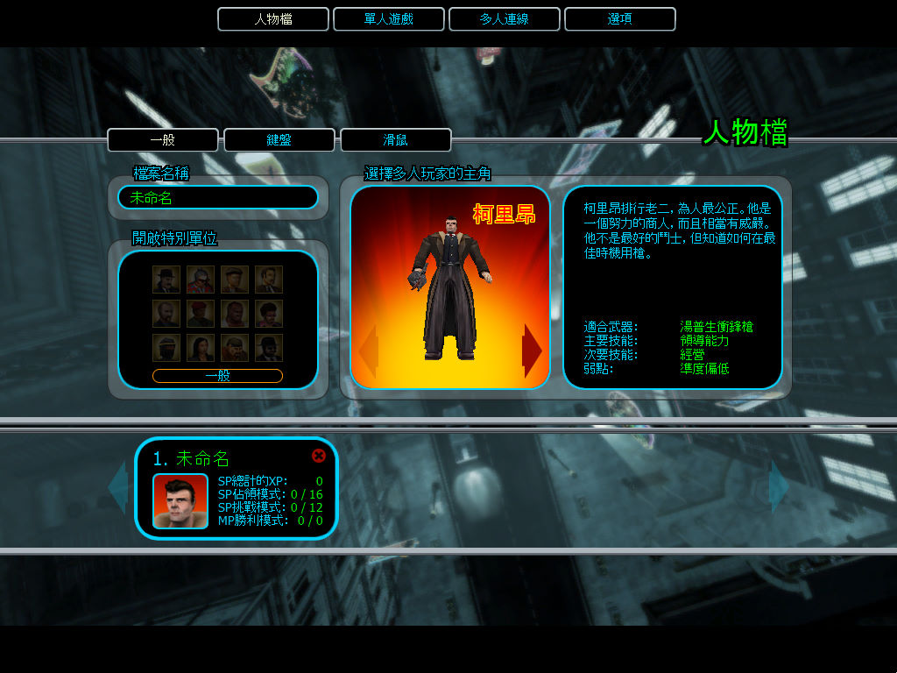
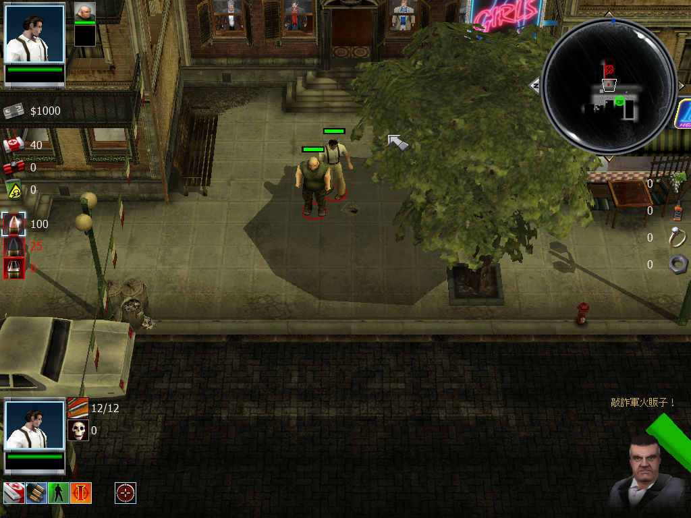

名稱：黑幫教父／黑幫之地 (Gangland，中文／英文版)
簡介：MediaMobsters（Sirious）2004年出品的黑幫模擬遊戲，兼具即時戰術、角色扮演等
遊戲的元素，由Whiptail代理發行。2006年由美思捷達中文化並代理發行 [待補]。


保護：繁中版無保護，英文版為StarForce 3.03+序號（PC73B-DQ34J-MJJF8-S86QC-1PMHS-K）
備註：繁中版為1.4.1版。
檔案：gangland_1_4_patch.rar = 1.4.0英文更新檔
nocd100.rar = 1.0.0免光碟檔
nocd140.rar = 1.4.0免光碟檔